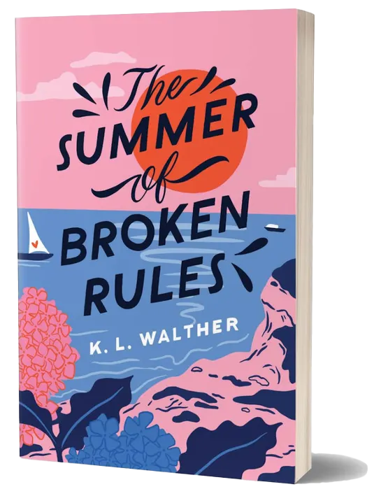

You are a lover of Romance!
My favorite Romance Novel of all time is The Summer Of Broken Rules! This book is a young adult romance novel about Meredith Fox, who returns to Martha's Vineyard for her cousin's wedding, 18 months after her sister's death, to honor her sister's legacy by winning the family's annual game of assassin, but finds herself falling for a cute groomsman, risking both the game and her heart. A 10/10 Read!